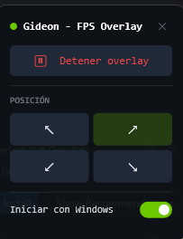

Sin inyecciones. Sin anti-cheat issues. Sin consumo perceptible. Solo el numero, donde lo necesitas.

Usa ETW, el mismo sistema de tracing de Windows. Sin hooks, sin DLL injection. Vanguard, EAC y BattlEye lo ignoran.
Pocos MB de RAM y practicamente 0% de CPU. No vas a notar que esta corriendo.
Intel, AMD y NVIDIA. Los eventos Present los emite Windows, no el driver de la GPU.
Elegi donde queres el contador. La posicion se recuerda entre sesiones.
El overlay no captura clicks ni teclas. El mouse pasa directo al juego.
Un toggle en el panel lo activa. Inicia con Windows sin ventana de UAC extra.
Verde - todo en orden. 60 FPS o mas.
Amarillo - atencion. Entre 30 y 59 FPS.
Rojo - problema. Menos de 30 FPS.
Opcion 1 - Ejecutable directo (recomendado):
Opcion 2 - Compilar desde codigo fuente:
Requiere Windows 10/11 y ejecutar como administrador. El UAC lo pide automaticamente.